Session Three — Number representation
Learning objectives
- We will discuss some example code from the
CODIOexercises. - Will have practised exercises in boolean logic and truth tables
- Will have been introduced to binary, Octal, and Hexadecimal representation and arithmetic
- Define more complex functions in Python
Pre-session activities
Please watch the following videos:
Boolean Algebra (video)
Primitive data types (refresher)
The "Live" Session
Live Recording
The session had to run on Sunday as, due to a sudden family illness, the session could not run on Friday evening.
Materials
Representing positive integers in binary (video)
Boolean Algebra (notes)
Following are the important rules used in Boolean algebra.
There are six types of Boolean Laws.
Commutative law
Any binary operation which satisfies the following expression is referred to as commutative operation.
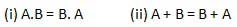
Commutative law states that changing the sequence of the variables does not have any effect on the output of a logic circuit.
Associative law
This law states that the order in which the logic operations are performed is irrelevant as their effect is the same.
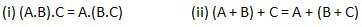
Distributive law
Distributive law states the following condition.
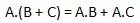
AND law
These laws use the AND operation. Therefore they are called as AND laws.
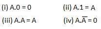
OR law
These laws use the OR operation. Therefore they are called as OR laws.
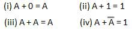
INVERSION law
This law uses the NOT operation. The inversion law states that double inversion of a variable results in the original variable itself.
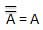
IMPORTANT BOOLEAN THEOREMS
Following are few important boolean Theorems.
- Variable used can have only two values. Binary 1 for HIGH and Binary 0 for LOW.
- Complement of a variable is represented by an overbar (-). Thus, complement of variable B is represented as
 . Thus if B = 0 then 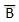= 1 and B = 1 then = 0.
. Thus if B = 0 then 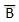= 1 and B = 1 then = 0. - ORing of the variables is represented by a plus (+) sign between them. For example ORing of A, B, C is represented as A + B + C.
- Logical ANDing of the two or more variable is represented by writing a dot between them such as A.B.C. Sometime the dot may be omitted like ABC.
There are six types of Boolean Laws.
Commutative law
Any binary operation which satisfies the following expression is referred to as commutative operation.
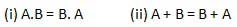
Commutative law states that changing the sequence of the variables does not have any effect on the output of a logic circuit.
Associative law
This law states that the order in which the logic operations are performed is irrelevant as their effect is the same.
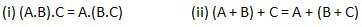
Distributive law
Distributive law states the following condition.
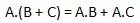
AND law
These laws use the AND operation. Therefore they are called as AND laws.
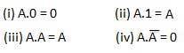
OR law
These laws use the OR operation. Therefore they are called as OR laws.
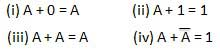
INVERSION law
This law uses the NOT operation. The inversion law states that double inversion of a variable results in the original variable itself.
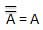
IMPORTANT BOOLEAN THEOREMS
Following are few important boolean Theorems.
| Boolean function/theorems | Description |
| Boolean Functions | Boolean Functions and Expressions, K-Map and NAND Gates realization |
| De Morgan's Theorems | De Morgan's Theorem 1 and Theorem 2 |
The Octal Number System (notes)
FOLLOWING ARE THE CHARACTERISTICS OF AN OCTAL NUMBER SYSTEM.
Octal Number − 125708
Calculating Decimal Equivalent −
Note − 125708 is normally written as 12570.
OCTAL ADDITION
Following octal addition table will help you to handle octal addition.
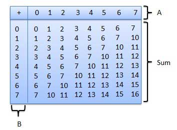
To use this table, simply follow the directions used in this example: Add 68and 58. Locate 6 in the A column then locate the 5 in the B column. The point in 'sum' area where these two columns intersect is the 'sum' of two numbers.
68 + 58 = 138.
Example − Addition
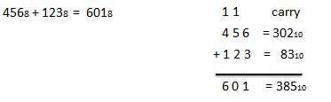
OCTAL SUBTRACTION
The subtraction of octal numbers follows the same rules as the subtraction of numbers in any other number system. The only variation is in borrowed number. In the decimal system, you borrow a group of 1010. In the binary system, you borrow a group of 210. In the octal system you borrow a group of 810.
Example − Subtraction
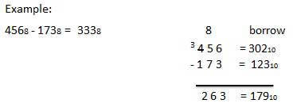
- Uses eight digits, 0,1,2,3,4,5,6,7.
- Also called base 8 number system.
- Each position in an octal number represents a 0 power of the base (8). Example: 80
- Last position in an octal number represents an x power of the base (8). Example: 8x where x represents the last position - 1.
Octal Number − 125708
Calculating Decimal Equivalent −
| Step | Octal Number | Decimal Number |
| Step 1 | 12570 | 8((1 × 8 |
| Step 2 | 12570 | 8(4096 + 1024 + 320 + 56 + 0) |
| Step 3 | 12570 | 85496 |
OCTAL ADDITION
Following octal addition table will help you to handle octal addition.
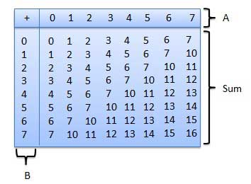
To use this table, simply follow the directions used in this example: Add 68and 58. Locate 6 in the A column then locate the 5 in the B column. The point in 'sum' area where these two columns intersect is the 'sum' of two numbers.
68 + 58 = 138.
Example − Addition
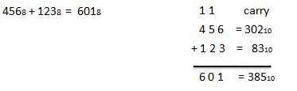
OCTAL SUBTRACTION
The subtraction of octal numbers follows the same rules as the subtraction of numbers in any other number system. The only variation is in borrowed number. In the decimal system, you borrow a group of 1010. In the binary system, you borrow a group of 210. In the octal system you borrow a group of 810.
Example − Subtraction
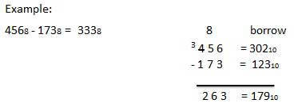
The Hexadecimal Number System (notes)
FOLLOWING ARE THE CHARACTERISTICS OF A HEXADECIMAL NUMBER SYSTEM.
Hexadecimal Number − 19FDE16
Calculating Decimal Equivalent −
Note − 19FDE16 is normally written as 19FDE.
HEXADECIMAL ADDITION
Following hexadecimal addition table will help you greatly to handle Hexadecimal addition.
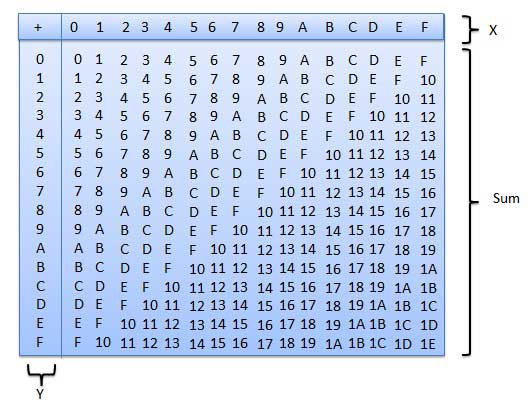
To use this table, simply follow the directions used in this example − Add A16and 516. Locate A in the X column then locate the 5 in the Y column. The point in 'sum' area where these two columns intersect is the sum of two numbers.
A16 + 516 = F16.
Example − Addition
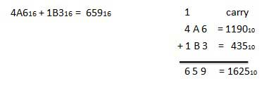
HEXADECIMAL SUBTRACTION
The subtraction of hexadecimal numbers follow the same rules as the subtraction of numbers in any other number system. The only variation is in borrowed number. In the decimal system, you borrow a group of 1010. In the binary system, you borrow a group of 210. In the hexadecimal system you borrow a group of 1610.
Example - Subtraction
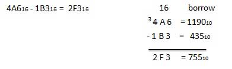
- Uses 10 digits and 6 letters, 0,1,2,3,4,5,6,7,8,9,A,B,C,D,E,F.
- Letters represents numbers starting from 10. A = 10, B = 11, C = 12, D = 13, E = 14, F = 15.
- Also called base 16 number system.
- Each position in a hexadecimal number represents a 0 power of the base (16). Example − 160
- Last position in a hexadecimal number represents an x power of the base (16). Example − 16x where x represents the last position - 1.
Hexadecimal Number − 19FDE16
Calculating Decimal Equivalent −
| Step | Binary Number | Decimal Number |
| Step 1 | 19FDE | 16((1 × 16 |
| Step 2 | 19FDE | 16((1 × 16 |
| Step 3 | 19FDE | 16(65536 + 36864 + 3840 + 208 + 14) |
| Step 4 | 19FDE | 16106462 |
HEXADECIMAL ADDITION
Following hexadecimal addition table will help you greatly to handle Hexadecimal addition.
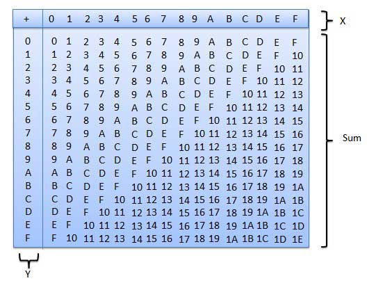
To use this table, simply follow the directions used in this example − Add A16and 516. Locate A in the X column then locate the 5 in the Y column. The point in 'sum' area where these two columns intersect is the sum of two numbers.
A16 + 516 = F16.
Example − Addition
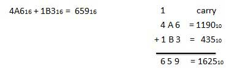
HEXADECIMAL SUBTRACTION
The subtraction of hexadecimal numbers follow the same rules as the subtraction of numbers in any other number system. The only variation is in borrowed number. In the decimal system, you borrow a group of 1010. In the binary system, you borrow a group of 210. In the hexadecimal system you borrow a group of 1610.
Example - Subtraction
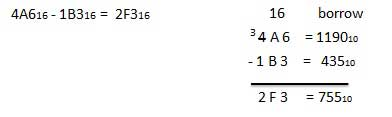
The slides used during the live session:
- Number systems
- Adding two positive 8-bit binary integers
- Logical binary shifts
- How and why computers use binary to represent all forms of data
- Why hexadecimal is used as a beneficial method of data representation
- Converting between number systems
- Signed integers using two's complement
- Units of data storage
- Compression
- Lossy and lossless compression methods
All files are in the pdf format.
- IDLE - The integrated editor and REPL loop (another Monty Python reference)
Post session activites
Work through the following CODIO materials (including the exercises):
- Python Data Analysis Lab, which consolidates the topics on
CODIOthat we have tackled thus far. - Creating Comparison and Composition Charts
- Comparison Charts
- Composition Charts
- Creating Distribution Charts
- Scatter Plots
- Box Plots and Histograms
Don't worry if you don't have time to complete all the sections; we will discuss them during "Day Three."
Complete these number system exercises (the answers are also on the page)